Logo
Lige fra starten af logodesignet var vi helt sikre på, at vi skulle benytte køkkenelementer. På den måde skulle den visuelle identitet vises. Vi legede med ideen om, at køkkenredskaberne skulle være med til at danne bogstaver. Dog var vi nødt til at kassere nogle af ideerne, da de gjorde læseligheden for besværlig. Resultatet endte med at gaflen dannede e'et for "Ellinors foodblog" og at logoet viste en tallerken med kniv, gaffel og ske.
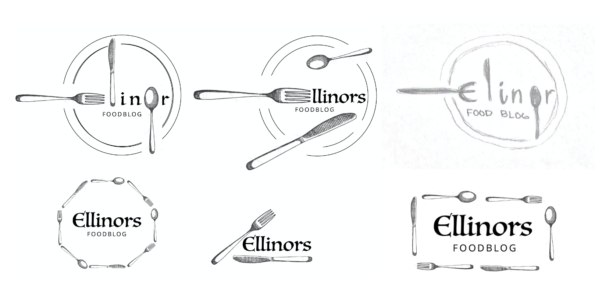
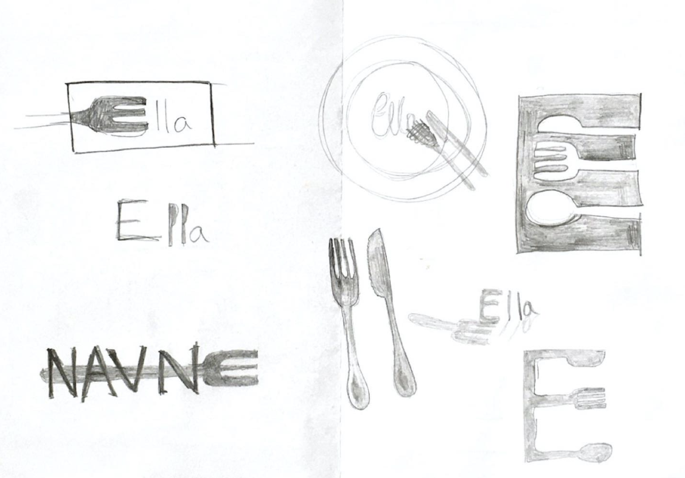
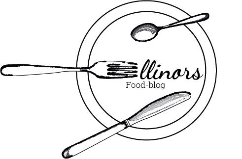
Moodboards
Moodboards beskriver en stil visuelt. Med disse moodboards har vi forsøgt, at illustrere stilen på vores site. Her skulle man meget gerne ikke være i tvivl om, hvad sitet omhandler. Derudover er der også lavet et moodboard til inspiration til logoet.

 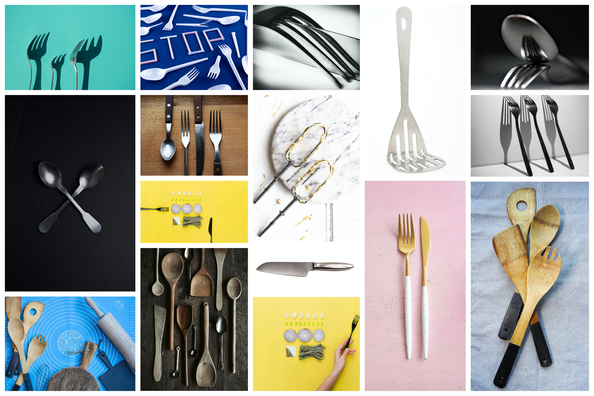
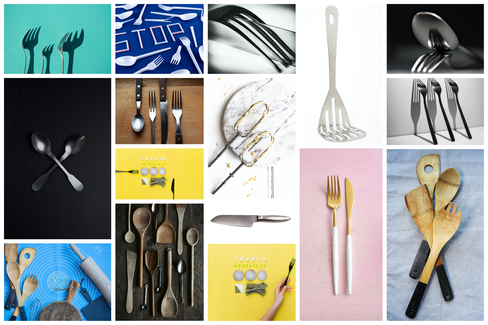
Wireframes
I gruppen har vi selvfølgelig også lavet wireframes til vores side. De er lavet ud fra de webkonventioner vi har lært. Blandt andet at logoet står øverst til venstre og at navigationen ligger i toppen.
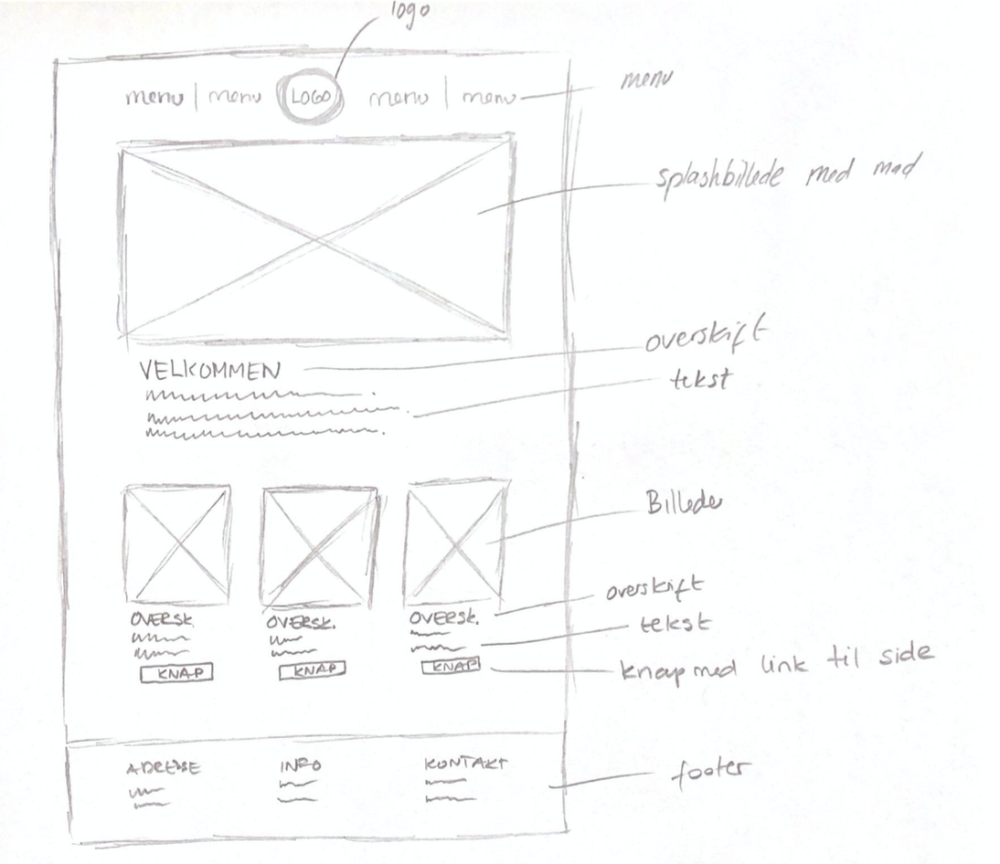
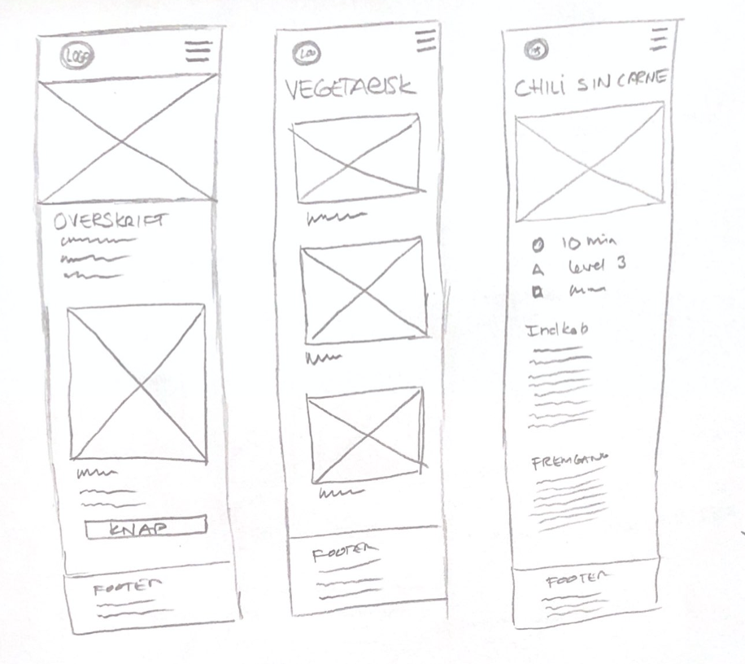
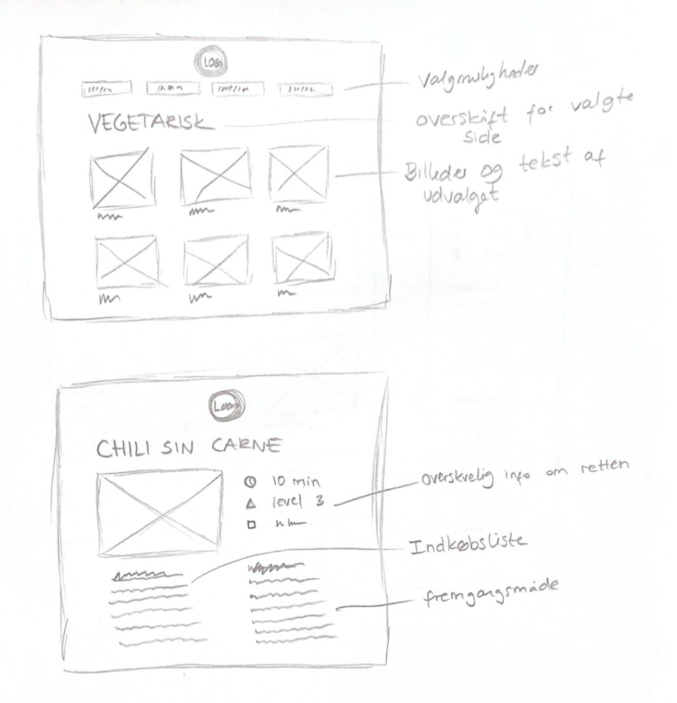
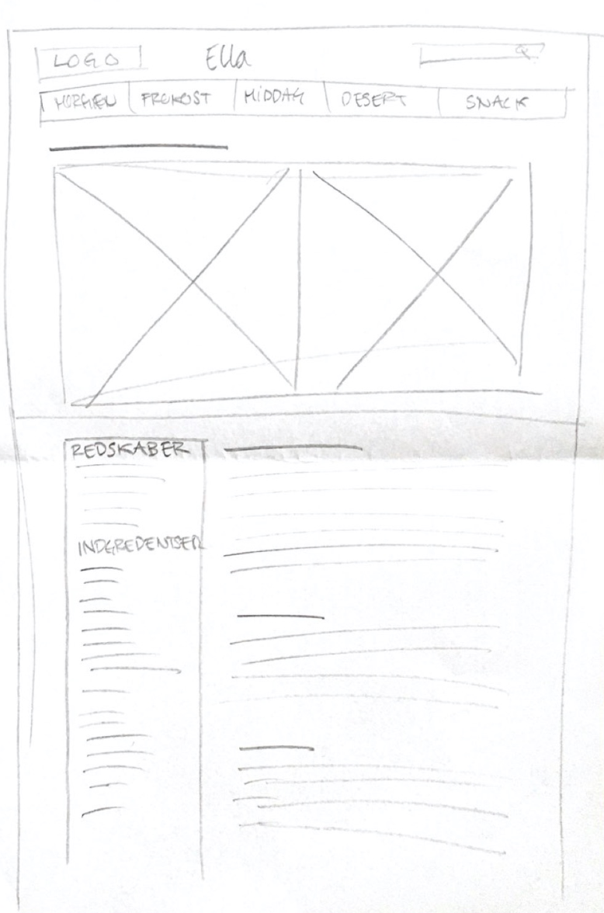
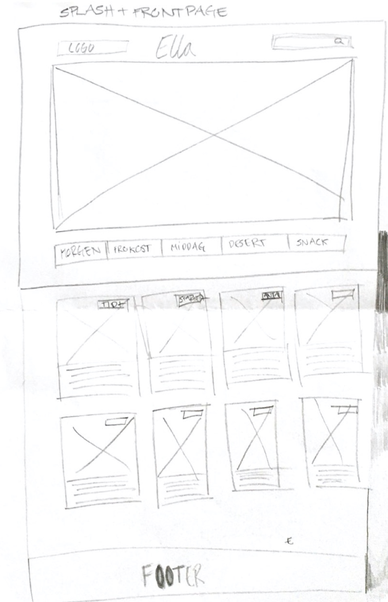
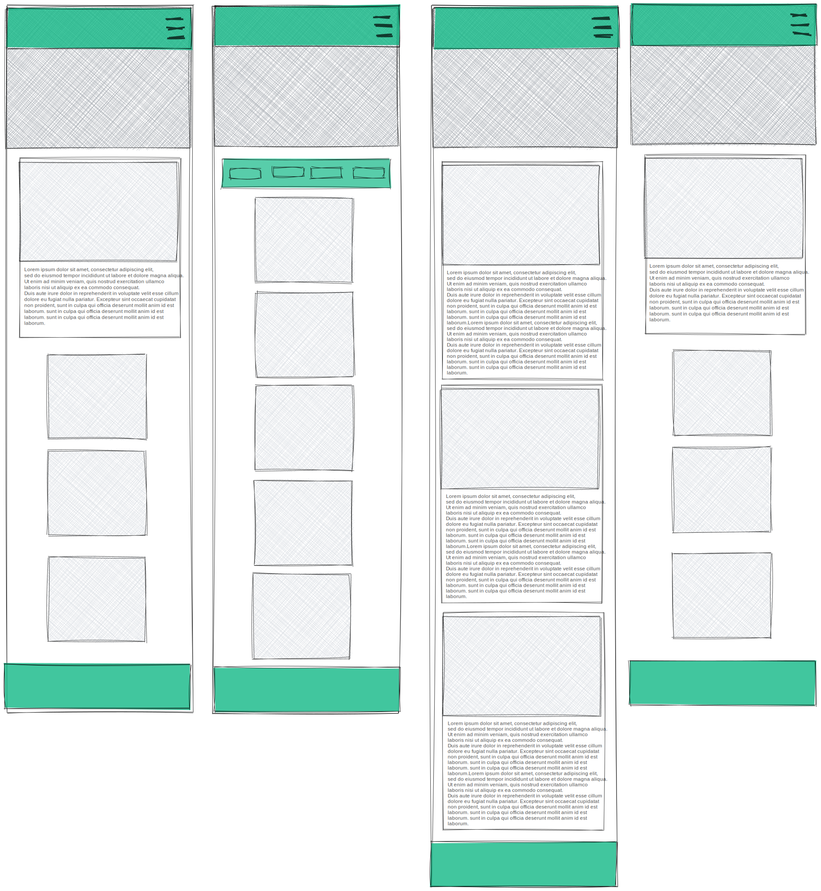

Sitemap
Derudover har vi lavet et sitemap, for at give bedre overblik over sidens opsætning. Siden skal deles op i "opskrifter", "blog" og en "om mig" sektion. "Opskrift"-sektionen skal deruover give mulighed for at klikke videre på hver enkelt opskrift til en seperat side.
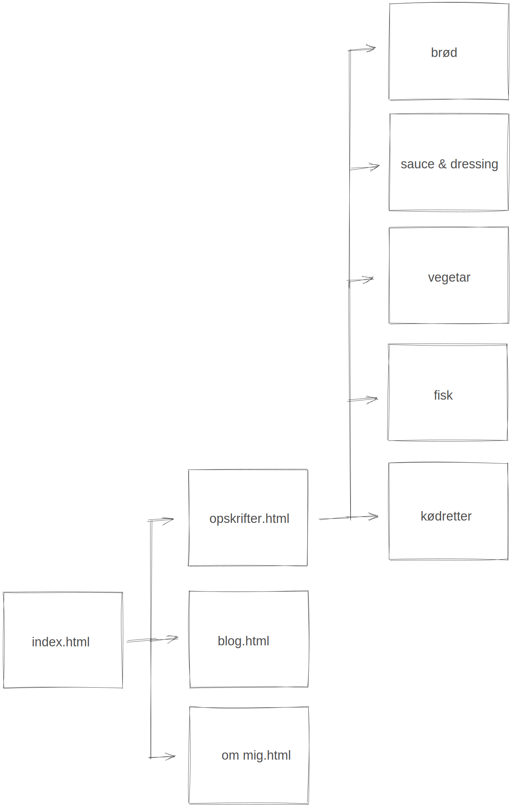